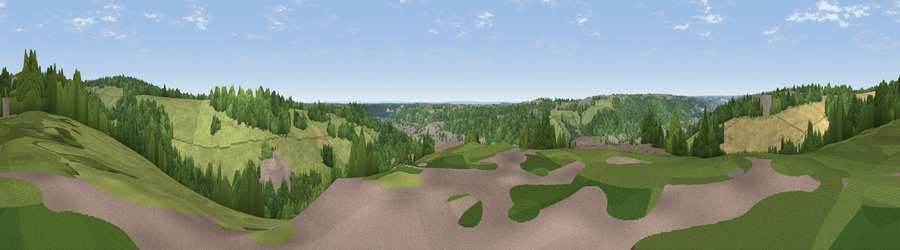

Viewpoint near Loudwater
#41647 in England · top 53% of its area beats it · near Loudwater · access?Where it is
The exact computed spot (SU 89875 92025). Click the marker for map links.
Public access: no public right of way or access land is recorded at this exact spot — it may be on private land. Computed from Natural England's CRoW access layer and OpenStreetMap rights of way — not the legal definitive map. Always verify locally.
The view, rendered

A 360° render of this exact spot computed from the terrain model, tree cover and land cover — summer colours, afternoon light, calibrated against photographs of famous viewpoints. Real trees, hedges and buildings will differ in detail.
The panorama
Grey silhouette: terrain skyline in each direction (720 bearings, Earth curvature and refraction included). Dashed green: skyline with trees (+15 m) and buildings (+8 m) as obstacles. Blue strip: how far the ground is visible on each bearing.
Where the view opens
Wedge length = distance to the farthest visible ground on that bearing (vegetation-aware). Rings at 10, 25 and 50 km.
What fills the view
42% grassland · 37% woodland · 11% built-up · 10% cropland
Angular shares of the visible panorama (visual magnitude), not map area. Landscape diversity 0.52 (0–1 Shannon).
Key numbers
More beautiful places nearby
The staircase of upgrades: each row has a higher view potential than everything closer. Driving times are estimates from straight-line distance, calibrated against real road routing — check an actual route before setting out.
| Place | Direction | Drive | Score |
|---|---|---|---|
| Viewpoint near Loudwater | ESE · 1 km | ~2 min | 33.8 |
| Viewpoint near Downley | NW · 6 km | ~14 min | 34.2 |
| Fultness Wood Hill | SSW · 9 km | ~17 min | 39.0 |
| Viewpoint near Whiteleaf | NW · 14 km | ~25 min | 58.2 |
| Brush Hill | NNW · 14 km | ~25 min | 67.9 |
| Viewpoint near Whiteleaf | NNW · 14 km | ~26 min | 70.1 |
| Beacon Hill | NNW · 15 km | ~27 min | 72.7 |
| Coombe Hill Monument | NNW · 16 km | ~28 min | 75.5 |
51.61988, -0.70321 · source: screening · position refined by local search. Computed location — check access rights before visiting.